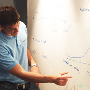

Whiteboards
 Når foredragene er over, er det alltid noen som vil vite mer, eller diskutere videre med foredragsholderen. Det er en del av den menneskelige natur å reise seg fra tilhørerplassen, bevege seg opp til talerstolen og formidle ytterligere kommentarer, etter selve foredraget. Det er ingen mening i at den slags aktiviteter skal undertrykkes. Derfor har vi satt opp fire whiteboards og annet utstyr på et 50 kvm. område i hjertet av utstillingen. Her blir foredragsholderne anmodet om å møte etter at foredraget er avholdt og mette de mange munner som skriker etter ytterligere kunnskap, eller som har noe helt spesielt å meddele.
Scandinavias biggest developer conference